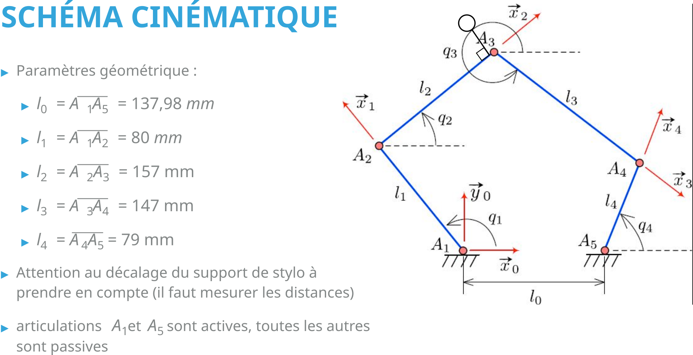

Écrire des tests C++ avec Google Test
Un test unitaire est un morceau de code dont le seul rôle est de vérifier automatiquement qu’un autre morceau de code fait ce qu’il doit faire. Tant qu’une vérification n’est pas écrite sous forme de test exécutable, elle n’existe pas : elle est au mieux dans la tête de celui qui a écrit le code, et elle disparaît à la première modification.
Dans ce chapitre, nous utilisons un projet support complet : la simulation du système 5 barres du cours, dans lequel les modèles géométriques direct et inverse sont à écrire, et où les tests sont déjà fournis.
Note
Les sections Écrire des tests pour du code Python et Utiliser la simulation pour écrire des tests reprennent le même projet, respectivement en Python et du point de vue de la simulation.
La section Exécuter les tests automatiquement : l’intégration continue montre comment faire exécuter ces tests automatiquement à chaque push.
Le projet support : 5 barres
Le projet est un espace de travail ROS 2 fourni avec le cours, dans le dossier mujoco/five_bars_ws du dépôt.
Il simule le système 5 barres étudié en travaux pratiques (voir Description mécanique de la plateforme système 5 barres).
Première étape, commune à tout le monde : récupérer le dépôt du cours et se placer dans l’espace de travail.
git clone https://github.com/yguel/informatique_industrielle_avec_ROS2.git
cd informatique_industrielle_avec_ROS2/mujoco/five_bars_ws


Fig. 13 Schéma cinématique du système 5 barres. Les deux moteurs imposent les angles absolus q1 (bras gauche A1A2) et q4 (bras droit A5A4) ; la chaîne se referme en A3 ; le stylo est porté par l’avant-bras gauche, décalé par rapport à A3.
Les paquets utiles pour ce chapitre sont :
Paquet |
Rôle |
|---|---|
|
Géométrie du robot : |
|
Simulation MuJoCo ( |
|
Le code à écrire (modèles direct et inverse, en C++ et en Python) et ses tests ( |
Le code à écrire est volontairement livré vide : seules les signatures et les conventions sont données.
five_bars_kinematics/include/five_bars_kinematics/kinematics.hpp — les structures et les deux fonctions à implémenter/// Paramètres géométriques (m). Voir five_bars_description/config/geometry.yaml.
struct Geometry
{
double l0; ///< |A1A5|
double l1; ///< |A1A2|
double l2; ///< |A2A3|
double l3; ///< |A4A3|
double l4; ///< |A5A4|
double pen_dx; ///< décalage du stylo par rapport à A3, le long de A2->A3
double pen_dy; ///< décalage du stylo par rapport à A3, à gauche de A2->A3
};
/// Angles absolus des deux moteurs (rad).
struct JointAngles
{
double q1;
double q4;
};
/// Position de la pointe du stylo dans R0 (m).
struct PenPosition
{
double x;
double y;
};
/// Modèle géométrique direct : (q1, q4) -> (x, y) du stylo.
/// @return std::nullopt si la chaîne ne peut pas se fermer pour ces angles.
std::optional<PenPosition> forwardKinematics(const JointAngles & q, const Geometry & geometry);
/// Modèle géométrique inverse : (x, y) du stylo -> (q1, q4), angles dans ]-pi, pi].
/// @return std::nullopt si le point n'est pas atteignable.
std::optional<JointAngles> inverseKinematics(const PenPosition & p, const Geometry & geometry);
// Modèles géométriques du système 5 barres — À IMPLÉMENTER.
// Voir include/five_bars_kinematics/kinematics.hpp pour les conventions.
#include "five_bars_kinematics/kinematics.hpp"
namespace five_bars_kinematics
{
std::optional<PenPosition> forwardKinematics(const JointAngles & /*q*/, const Geometry & /*geometry*/)
{
// TODO : implémenter le modèle géométrique direct.
return std::nullopt;
}
std::optional<JointAngles> inverseKinematics(const PenPosition & /*p*/, const Geometry & /*geometry*/)
{
// TODO : implémenter le modèle géométrique inverse.
return std::nullopt;
}
} // namespace five_bars_kinematics
L’objectif de cette section n’est pas d’écrire ces deux fonctions, mais de comprendre les tests qui les jugent.
Installer l’environnement
Le projet a besoin de ROS 2 Jazzy et de MuJoCo 4.0.1. Il y a deux façons de les obtenir :
avec Docker : rien à installer sur votre machine à part Docker, l’image contient ROS 2, MuJoCo et Google Test. C’est la méthode recommandée, et c’est exactement ce que fait l’intégration continue du projet.
sans Docker : installation native. Elle n’a de sens que sur Ubuntu 24.04 (Noble), la seule distribution pour laquelle ROS 2 Jazzy est distribué en paquets binaires.
Comment installer Docker sur votre machine si besoin ?
Suivez les instructions officielles : installer Docker Engine (pour Ubuntu : installer Docker Engine sur Ubuntu).
Ajoutez ensuite votre compte au groupe docker, sans quoi il faudra préfixer chaque commande par sudo :
sudo usermod -aG docker $USER
Fermez puis rouvrez votre session (le changement de groupe n’est pris en compte qu’à la connexion), et vérifiez :
docker run --rm hello-world
Voir aussi les étapes post-installation de la documentation Docker.
Installez Docker Desktop pour Windows, en choisissant le moteur WSL 2 (c’est le choix par défaut).
Puis, dans Settings → Resources → WSL integration, activez l’intégration pour votre distribution Ubuntu-24.04. La commande docker devient alors utilisable depuis le terminal Ubuntu de WSL, ce qui est ce dont nous avons besoin.
Vérifiez depuis le terminal Ubuntu :
docker run --rm hello-world
Installez Docker Desktop pour Mac, en prenant la version correspondant à votre processeur (Apple Silicon ou Intel).
Vérifiez dans un terminal :
docker run --rm hello-world
Choisissez maintenant l’onglet qui correspond à votre machine.
C’est la configuration de référence : celle des machines de la salle de cours, et celle de l’intégration continue.
Tout passe par un seul script, docker/start.sh, qui construit l’image au premier appel (comptez une dizaine de minutes) :
docker/start.sh test # compile et lance tous les tests, headless
Les autres usages du script :
docker/start.sh # un shell dans le conteneur, workspace compilé
docker/start.sh --rebuild # forcer la reconstruction de l'image
docker/start.sh ros2 run five_bars_mujoco direct_gui # lancer une seule commande
Note
Quelques propriétés utiles du script :
le dossier
src/de votre machine est monté dans le conteneur (/ws/src) : vous éditez le code avec votre éditeur habituel, sur votre machine, et vous compilez dans le conteneur ;l’affichage graphique est géré automatiquement (le script appelle
xhost +local:dockeret passe votreDISPLAY) : le viewer MuJoCo et RViz s’ouvrent comme des fenêtres normales ;si une carte graphique est disponible (
/dev/dri), elle est passée au conteneur ;un second appel à
docker/start.sh, pendant que le conteneur tourne, ouvre simplement un deuxième shell dedans.
Avertissement
Cette installation n’est valable que sur Ubuntu 24.04 (Noble). ROS 2 Jazzy n’est distribué en paquets binaires que pour cette version. Sur une autre distribution ou une autre version d’Ubuntu, utilisez Docker.
1. Installer ROS 2 Jazzy
Suivez la procédure officielle : installation de ROS 2 Jazzy par paquets Debian, puis :
sudo apt install ros-jazzy-ros-base python3-colcon-common-extensions
2. Installer les dépendances du projet
Ce sont exactement celles de l’image Docker (voir docker/Dockerfile) :
sudo apt install -y \
build-essential cmake git python3-pip python3-numpy python3-yaml python3-pytest python3-tk \
googletest libgtest-dev libgmock-dev \
ros-jazzy-ament-cmake-gtest ros-jazzy-ament-cmake-pytest \
ros-jazzy-ros2-control ros-jazzy-ros2-controllers ros-jazzy-xacro \
ros-jazzy-robot-state-publisher ros-jazzy-tf2-ros-py \
libgl1 libegl1 libglfw3 libosmesa6
Ajoutez ros-jazzy-rviz2 si vous voulez visualiser le robot dans RViz.
3. Installer MuJoCo
pip3 install --break-system-packages "mujoco==4.0.1"
Note
Deux points méritent une explication.
--break-system-packages est nécessaire parce qu’Ubuntu 24.04 protège les paquets Python du système (PEP 668). Un environnement virtuel serait plus propre, mais il complique l’usage de colcon, qui s’attend à trouver les paquets Python de ROS 2.
La même roue pip fournit MuJoCo pour Python et la bibliothèque C utilisée par les tests gtest : Python et C++ utilisent ainsi strictement la même version. C’est le fichier cmake/FindMuJoCo.cmake du projet qui la localise, en interrogeant le module Python. Vous n’avez donc rien à configurer ; la variable MUJOCO_DIR ne sert que si vous préférez une archive officielle de MuJoCo.
Vérifiez l’installation :
python3 -c "import mujoco, os; print(mujoco.__version__, os.path.dirname(mujoco.__file__))"
4. Compiler et lancer les tests
source /opt/ros/jazzy/setup.bash
colcon build --cmake-args -DCMAKE_BUILD_TYPE=RelWithDebInfo
source install/setup.bash
colcon test --event-handlers console_direct+
colcon test-result --verbose
Le source /opt/ros/jazzy/setup.bash est à refaire dans chaque nouveau terminal : ajoutez-le à votre ~/.bashrc si vous travaillez souvent sur le projet.
Sur un Raspberry Pi 5 sous Ubuntu 24.04 pour arm64, l’installation native fonctionne : ROS 2 Jazzy est publié pour arm64, et MuJoCo fournit des roues aarch64.
Reprenez à l’identique les quatre étapes de l’onglet « Linux sans Docker ». Trois précautions s’ajoutent, propres au Pi.
Compiler sans saturer la mémoire
colcon compile tous les paquets en parallèle, ce qui suffit à faire tomber un Pi à court de mémoire : le compilateur se fait tuer par le noyau et la compilation échoue avec un message peu clair. Limitez le parallélisme :
colcon build --parallel-workers 2 --cmake-args -DCMAKE_BUILD_TYPE=RelWithDebInfo
Sur un modèle 4 Go, ajoutez en plus un fichier d’échange (swap) d’au moins 2 Go avant de compiler.
Rendu logiciel
Le Pi n’a pas de pilote OpenGL utilisable par MuJoCo pour le rendu hors écran. Forcez le rendu logiciel, fourni par libosmesa6 :
export MUJOCO_GL=osmesa
Ajoutez cette ligne à votre ~/.bashrc. Les tests n’en souffrent pas : ils utilisent la simulation en mode headless, sans fenêtre.
Le viewer 3D
Un Pi 5 encaisse l’IHM avec sa fenêtre 3D. Utilisez donc la même commande que tout le monde :
ros2 run five_bars_mujoco direct_gui
Astuce
Si l’affichage devient poussif chez vous, deux portes de sortie, dans cet ordre :
la version sans fenêtre de rendu — les curseurs restent, la simulation tourne derrière, et c’est amplement suffisant pour manipuler
q1etq4:ros2 run five_bars_mujoco direct_gui --no-viewer
#. une machine plus puissante, dans une approche industrielle, les single board computers comme le Raspberry Pi sont utilisés pour exécuter les nœuds ROS 2, mais le développement et la compilation et le rendu 3D se font sur des machines plus performantes. Néanmoins pour ce cours, le Pi 5 est normalement suffisant pour exécuter les nœuds ROS 2 et la simulation, même avec le rendu 3D.
Sous Windows, on ne travaille pas directement dans Windows : on installe WSL 2 (une vraie Ubuntu dans Windows), et tout le reste se fait depuis le terminal Ubuntu.
1. Installer WSL 2 avec Ubuntu 24.04
Dans un terminal PowerShell en administrateur :
wsl --install -d Ubuntu-24.04
Redémarrez, puis ouvrez Ubuntu-24.04 depuis le menu Démarrer et créez votre compte Linux. La procédure détaillée est celle de Microsoft : installer WSL. Le chapitre 1 en donne aussi une version pas à pas.
Avertissement
Clonez le dépôt dans le système de fichiers de Linux (sous ~/), et surtout pas dans /mnt/c/.... Les accès de WSL aux disques Windows sont très lents — une compilation peut prendre plusieurs fois plus de temps — et les permissions de fichiers n’y sont pas respectées, ce qui perturbe git et Docker.
2. Puis, au choix
À partir de ce point, votre terminal Ubuntu est un Linux ordinaire, et les deux autres onglets s’appliquent mot pour mot :
avec Docker (recommandé) : installez Docker Desktop en activant l’intégration WSL (voir le dépliant « Comment installer Docker » ci-dessus), puis suivez l’onglet « Linux avec Docker » ;
sans Docker : votre WSL est une Ubuntu 24.04, donc l’onglet « Linux sans Docker » s’applique tel quel.
Note
Sous Windows 11, WSL affiche les fenêtres graphiques Linux sans configuration (WSLg) : le viewer MuJoCo et RViz s’ouvrent comme des applications Windows. Le rendu est logiciel par défaut, donc lent mais utilisable.
Sur Mac, Docker est la seule voie raisonnable : ROS 2 Jazzy n’est pas distribué en binaire pour macOS, il faudrait le compiler depuis les sources, ce qui dépasse largement le cadre de ce cours.
Installez Docker Desktop (voir le dépliant ci-dessus), puis :
docker/start.sh test
Cela fonctionne sur Apple Silicon comme sur Intel : l’image est une image Linux, et MuJoCo y est installé pour Linux.
Avertissement
Deux limites, propres à Docker Desktop et non au projet :
macOS n’a pas de serveur X11, donc
docker/start.shdétecte l’absence deDISPLAYet bascule en mode headless : les tests tournent, mais aucune fenêtre ne s’ouvre. Pour obtenir le viewer 3D, installez XQuartz, cochez « Allow connections from network clients » dans ses préférences, puis lancezxhost + 127.0.0.1et exportezDISPLAY=host.docker.internal:0avant d’appeler le script.l’option
--network hostn’existe pas sur Docker Desktop. Les nœuds ROS 2 à l’intérieur du conteneur se voient entre eux sans problème, mais un nœud lancé sur le Mac lui-même ne les verra pas.
Astuce
Si vous voulez seulement jouer avec MuJoCo, sans ROS 2, une installation native est possible : pip3 install "mujoco==4.0.1". Attention, sur Mac le viewer interactif s’ouvre avec mjpython et non python3. Les tests de ce chapitre, eux, ont besoin de ROS 2 et donc du conteneur.
Note
Les sections suivantes supposent que vous savez lancer les tests, par docker/start.sh test ou par colcon test. Si votre environnement n’est pas encore en place, revenez à Installer l’environnement.
Voir le robot avant d’écrire une ligne
Avant de parler de tests, regardez la machine bouger. Une seule commande ouvre le
simulateur MuJoCo avec deux curseurs, un par moteur : vous imposez q1 et q4,
et le pantographe se referme sous vos yeux.
docker/start.sh ros2 run five_bars_mujoco direct_gui
Au premier appel, le script construit l’image puis compile l’espace de travail : comptez une dizaine de minutes. Ensuite, la fenêtre s’ouvre en quelques secondes.
source /opt/ros/jazzy/setup.bash
colcon build --cmake-args -DCMAKE_BUILD_TYPE=RelWithDebInfo
source install/setup.bash
ros2 run five_bars_mujoco direct_gui
Déplacez les deux curseurs : les quatre barres restent assemblées, parce que la
fermeture de la chaîne en A3 est une contrainte du modèle MuJoCo, et la pointe du
stylo décrit l’espace de travail du mécanisme.
Note
Pas d’affichage 3D — connexion en ssh, Raspberry Pi, Mac sans XQuartz, machine
sans OpenGL ? La même commande existe sans fenêtre de rendu : seuls les curseurs
s’affichent, et la simulation tourne derrière.
ros2 run five_bars_mujoco direct_gui --no-viewer
Astuce
Pour regarder le modèle seul, sans aucun nœud ROS 2, MuJoCo sait ouvrir le MJCF
directement. Le panneau Control de la fenêtre donne alors les deux actionneurs
act_q1 et act_q4 :
python3 -m mujoco.viewer --mjcf=/ws/install/five_bars_description/share/five_bars_description/mjcf/five_bars.xml
Hors conteneur, remplacez /ws par le chemin de votre espace de travail. Sur
macOS, il faut lancer mjpython et non python3.
Ce que vous venez de voir est la vérité terrain des tests de ce chapitre : ce sont
exactement ces servos simulés et ce site pen_tip que les tests interrogent, en mode
headless, pour juger vos modèles géométriques.
Les autres façons de lancer la simulation — simulateur et IHM en nœuds séparés, chaîne
ros2_control complète, RViz — sont rassemblées dans l”aide-mémoire du 5 barres, avec les commandes de compilation et de test.
Commencer par les tests : la démarche TDD
Le projet est livré dans un état particulier : les tests existent, le code n’existe pas, donc les tests échouent. C’est le point de départ du développement piloté par les tests (Test Driven Development, TDD), dont le cycle est :
Rouge : écrire (ou lire) un test qui échoue, et vérifier qu’il échoue pour la bonne raison ;
Vert : écrire le code le plus simple qui fait passer le test ;
Refactoriser : améliorer le code sans changer son comportement, les tests servant de filet de sécurité.
Cette démarche a trois vertus, qui sont les raisons pour lesquelles ce projet vous est donné dans cet état :
Elle force à spécifier avant de coder. Les tests du 5 barres disent précisément ce qu’est une bonne implémentation : quelles tolérances, quel mode d’assemblage, que renvoyer pour une configuration impossible.
Elle garantit que le test est capable d’échouer. Un test écrit après le code, et qui passe du premier coup, n’a rien prouvé : il peut très bien ne rien vérifier du tout.
Elle donne un critère d’arrêt objectif : le travail est fini quand les tests passent, pas quand « ça a l’air de marcher ».
Avertissement
Un test qui ne peut pas échouer est un test inutile, et même nuisible : il donne un faux sentiment de sécurité. Prenez l’habitude de vérifier qu’un test échoue quand vous cassez volontairement le code qu’il teste (changez un signe, supprimez un terme). Nous en donnons un exemple mesuré plus bas, dans Lire et interpréter un échec.
Les briques de base de gtest
Google Test (gtest) est la bibliothèque de test unitaire C++ utilisée par ROS 2.
Un fichier de test est un fichier .cpp ordinaire, sans main() : c’est la bibliothèque qui fournit le main(), découvre les tests déclarés et les exécute.
Déclarer un cas de test
La macro TEST(SuiteDeTests, NomDuTest) déclare un cas de test :
#include <gtest/gtest.h>
TEST(Arithmetique, LAdditionEstCommutative)
{
EXPECT_EQ(2 + 3, 3 + 2);
}
Le premier argument regroupe les tests en « suites » (c’est ce qui apparaît à gauche du point dans les rapports : ForwardKinematics.HomeConfiguration), le second nomme le test.
Astuce
Nommez un test par ce qu’il affirme, pas par la fonction qu’il appelle.
PenOffsetIsTakenIntoAccount ou UnassemblableConfigurationReturnsNullopt décrivent une propriété attendue ; TestForwardKinematics2 ne dit rien et n’aide pas à diagnostiquer un échec.
ASSERT_* ou EXPECT_* : savoir lequel choisir
Les vérifications existent en deux familles, et le choix entre les deux n’est pas cosmétique :
Famille |
Comportement en cas d’échec |
|---|---|
|
Signale l’échec et continue le test. On obtient donc toutes les erreurs du test en une seule exécution. |
|
Signale l’échec et quitte immédiatement la fonction de test. |
La règle pratique est simple : on utilise ASSERT_* quand la suite du test n’aurait aucun sens, ou provoquerait un plantage, si la vérification échoue ; on utilise EXPECT_* partout ailleurs.
Les tests du 5 barres en donnent une illustration directe : les fonctions renvoient un std::optional, et déréférencer un std::optional vide est un comportement indéfini.
Il faut donc arrêter le test si la solution est absente, puis seulement comparer les coordonnées :
TEST_F(ForwardKinematics, HomeConfiguration)
{
const auto q = sim_->measuredAngles();
const auto pen = sim_->penPosition();
const auto p = forwardKinematics(q, geometry_);
ASSERT_TRUE(p.has_value()) << "forwardKinematics n'a pas renvoyé de solution";
EXPECT_NEAR(p->x, pen.x, kPosTol);
EXPECT_NEAR(p->y, pen.y, kPosTol);
}
Comparer des flottants : EXPECT_NEAR
C’est le point le plus important pour un roboticien.
Deux calculs flottants mathématiquement équivalents ne donnent presque jamais le même résultat binaire : comparer des positions avec EXPECT_EQ produit des tests qui échouent au hasard.
On compare donc toujours à une tolérance près :
EXPECT_NEAR(valeur_obtenue, valeur_attendue, tolerance);
La tolérance n’est pas une valeur magique : c’est une décision d’ingénierie qui doit être justifiée et documentée. Dans le projet, les trois tolérances utilisées sont déclarées et commentées en un seul endroit :
constexpr double kPosTol = 1e-4; // 0.1 mm entre modèle et simulation
constexpr double kAngleTol = 1e-3; // rad
constexpr double kReachTol = 5e-4; // 0.5 mm après asservissement simulé
Chacune correspond à une exigence différente :
kPosTol(0,1 mm) compare le modèle analytique à la géométrie de la simulation : les deux calculent la même chose, l’écart ne doit être qu’un résidu numérique ;kAngleTol(10-3 rad) compare des angles retrouvés par le modèle inverse, qui cumulent les erreurs de la chaîne de calcul ;kReachTol(0,5 mm) juge la position atteinte après asservissement des servos simulés : s’y ajoutent l’erreur statique de l’asservissement et la raideur des liaisons, donc la tolérance est plus large.
Avertissement
Une tolérance trop large rend le test incapable de détecter une vraie erreur ; une tolérance trop serrée rend le test instable (flaky), c’est-à-dire qu’il échoue de façon aléatoire. Un test instable est pire qu’un test absent : l’équipe prend l’habitude de relancer la CI jusqu’à ce qu’elle passe, et finit par ignorer les vrais échecs.
Documenter un échec : messages et SCOPED_TRACE
Un test qui échoue doit permettre de comprendre le problème sans ouvrir le débogueur. Deux mécanismes y contribuent.
D’abord, tout message passé en flux à une vérification est affiché en cas d’échec :
ASSERT_TRUE(p.has_value()) << "forwardKinematics n'a pas renvoyé de solution";
Ensuite, quand un test boucle sur plusieurs jeux de données, l’affichage ne dit pas quelle itération a échoué.
SCOPED_TRACE ajoute cette information à tous les échecs survenant dans sa portée :
TEST_F(ForwardKinematics, MatchesMujocoSimulation)
{
for (const auto & [q1d, q4d] : jointGrid()) {
SCOPED_TRACE(testing::Message() << "q1=" << q1d << "° q4=" << q4d << "°");
const auto [q, pen] = simulate(deg(q1d), deg(q4d));
const auto p = forwardKinematics(q, geometry_);
ASSERT_TRUE(p.has_value()) << "configuration atteignable déclarée impossible";
EXPECT_NEAR(p->x, pen.x, kPosTol);
EXPECT_NEAR(p->y, pen.y, kPosTol);
}
}
Sans la ligne SCOPED_TRACE, le rapport d’échec indiquerait seulement le numéro de ligne de la comparaison, identique pour les 16 configurations.
Avec elle, il indique q1=90° q4=20° : on sait immédiatement quelle configuration pose problème.
Les fixtures : partager un contexte entre tests
Les tests du 5 barres ont besoin d’un contexte coûteux : une simulation MuJoCo chargée depuis un fichier MJCF. Le charger dans chaque test serait lent et répétitif. C’est le rôle des fixtures.
Une fixture est une classe qui dérive de ::testing::Test ; les tests qui l’utilisent sont déclarés avec TEST_F (F pour fixture) et accèdent à ses membres protégés.
Quatre points d’entrée sont disponibles :
Méthode |
Quand elle est appelée |
|---|---|
|
Une fois avant le premier test de la suite (statique). |
|
Avant chaque test. |
|
Après chaque test. |
|
Une fois après le dernier test de la suite (statique). |
Dans le projet, le modèle MuJoCo est chargé une seule fois pour toute la suite, mais la simulation est remise à son état initial avant chaque test :
// Une simulation partagée par toute la suite (chargement du MJCF une seule fois).
class MujocoFixture : public ::testing::Test
{
protected:
static void SetUpTestSuite() {sim_ = std::make_unique<MujocoFiveBars>();}
static void TearDownTestSuite() {sim_.reset();}
void SetUp() override
{
sim_->reset();
geometry_ = sim_->geometry();
}
/// Asservit (q1, q4) depuis 'home' ; renvoie les angles mesurés et la position du stylo.
std::pair<JointAngles, PenPosition> simulate(double q1, double q4)
{
sim_->reset();
EXPECT_TRUE(sim_->settle(q1, q4)) << "la simulation n'a pas convergé";
EXPECT_LT(sim_->closureError(), 1e-6) << "chaîne non fermée dans la simulation";
return {sim_->measuredAngles(), sim_->penPosition()};
}
static std::unique_ptr<MujocoFiveBars> sim_;
Geometry geometry_{};
};
std::unique_ptr<MujocoFiveBars> MujocoFixture::sim_;
C’est l’équilibre à rechercher dans toute fixture :
mutualiser ce qui est coûteux et immuable (ici le chargement du modèle) dans
SetUpTestSuite;réinitialiser ce qui est mutable (ici l’état de la simulation) dans
SetUp.
Important
Des tests doivent être indépendants : le résultat d’un test ne doit jamais dépendre de l’exécution d’un autre, ni de l’ordre d’exécution.
Sans le sim_->reset() de SetUp(), un test hériterait de la configuration laissée par le précédent, et l’ensemble deviendrait impossible à diagnostiquer.
C’est aussi ce qui permet de rejouer un test seul, ce dont on a besoin pour déboguer.
Enfin, la fixture factorise une opération métier répétée dans tous les tests — amener la simulation à l’équilibre et en lire le résultat — en vérifiant au passage deux conditions de validité de la mesure (convergence et fermeture de la chaîne). Une méthode d’aide de fixture est le bon endroit pour ce genre de vérification : écrite une fois, elle protège tous les tests.
Réutiliser une fixture sous plusieurs noms
Les trois suites de tests du projet partagent la même fixture, mais portent des noms différents, par un simple alias de type :
// ------------------------------------------------------------- banc de test (passe)
using SimulationHarness = MujocoFixture;
C’est une technique utile : elle permet de regrouper les tests par sujet dans les rapports (SimulationHarness.*, ForwardKinematics.*, InverseKinematics.*) et de n’exécuter qu’un sujet à la fois, sans dupliquer le code de la fixture.
Que vérifient les tests du 5 barres ?
Au-delà de la syntaxe, la question intéressante est : quelles propriétés faut-il vérifier pour être sûr d’un modèle géométrique ? Le projet donne un répertoire de bonnes pratiques, applicable à tout code de calcul.
Un cas nominal simple, vérifiable à la main
Le premier test porte sur la configuration d’assemblage (home), dont la position du stylo a été mesurée sur la CAO.
Il vaut mieux commencer par un cas unique que l’on peut vérifier à la main : s’il échoue, le diagnostic est immédiat.
Un balayage de l’espace de travail
Un seul point ne prouve rien (un modèle faux peut être juste par accident en un point).
Le test MatchesMujocoSimulation, montré plus haut, balaie 16 configurations réparties dans l’espace de travail, loin des singularités, et compare à chaque fois le modèle à la simulation.
Une propriété qui attrape une erreur précise
Certains tests sont écrits pour piéger une erreur que l’on sait probable.
Ici, l’erreur classique est de confondre la pointe du stylo avec le point de fermeture A3, alors que le stylo en est décalé de 16 mm et 21 mm :
TEST_F(ForwardKinematics, PenOffsetIsTakenIntoAccount)
{
// Le stylo n'est PAS en A3 : un modèle qui l'oublie doit échouer ici.
const auto p = forwardKinematics(sim_->measuredAngles(), geometry_);
ASSERT_TRUE(p.has_value());
const auto a3 = sim_->siteXY("A3_link2");
EXPECT_NEAR(
std::hypot(p->x - a3[0], p->y - a3[1]), std::hypot(geometry_.pen_dx, geometry_.pen_dy), kPosTol);
}
Ce test ne vérifie pas une valeur numérique attendue, mais une relation géométrique : quelle que soit la configuration, la distance entre la pointe du stylo et A3 doit valoir la norme du décalage.
Des invariants
Un invariant est une propriété vraie pour toute entrée valide, sans qu’il soit nécessaire de connaître le résultat attendu. Les invariants sont des tests particulièrement rentables : ils sont courts et couvrent un grand nombre de cas.
Ici, le modèle inverse doit défaire exactement ce que fait le modèle direct :
TEST_F(InverseKinematics, InverseOfForwardIsIdentity)
{
for (const auto & [q1d, q4d] : jointGrid()) {
SCOPED_TRACE(testing::Message() << "q1=" << q1d << "° q4=" << q4d << "°");
const auto p = forwardKinematics({deg(q1d), deg(q4d)}, geometry_);
ASSERT_TRUE(p.has_value());
const auto r = inverseKinematics(*p, geometry_);
ASSERT_TRUE(r.has_value());
EXPECT_NEAR(wrap(r->q1 - deg(q1d)), 0.0, 1e-9);
EXPECT_NEAR(wrap(r->q4 - deg(q4d)), 0.0, 1e-9);
}
}
Notez la tolérance : 10-9 rad, bien plus serrée qu’ailleurs. C’est cohérent, car cette comparaison ne fait intervenir aucune simulation : elle enchaîne deux calculs analytiques, et seule l’erreur d’arrondi est admissible.
Prudence
Un invariant ne suffit jamais seul : deux fonctions toutes les deux fausses mais réciproques l’une de l’autre passeraient ce test. C’est pourquoi il faut le combiner avec les tests de comparaison à une référence externe (ici la simulation).
Les cas d’erreur
Un code n’est spécifié que si l’on sait ce qu’il fait des entrées invalides.
Les deux fonctions doivent renvoyer un std::optional vide pour une configuration non assemblable ou un point inatteignable, et les tests le vérifient explicitement :
TEST_F(InverseKinematics, UnreachablePointReturnsNullopt)
{
EXPECT_TRUE(inverseKinematics({0.07, 0.17}, geometry_).has_value());
EXPECT_FALSE(inverseKinematics({0.5, 0.5}, geometry_).has_value()); // trop loin
EXPECT_FALSE(inverseKinematics({0.0, 0.0}, geometry_).has_value()); // sur l'axe moteur
}
Chacun de ces tests vérifie aussi un cas valide (EXPECT_TRUE en première ligne).
C’est un détail important : sans lui, une fonction qui renverrait systématiquement std::nullopt passerait le test alors qu’elle ne calcule rien.
Un test du banc de test lui-même
Enfin, la suite SimulationHarness ne teste pas le code de l’étudiant : elle vérifie que la référence est digne de confiance (le stylo est bien là où la CAO l’annonce, et la simulation suit bien les consignes).
Ces deux tests doivent passer dès le départ.
TEST_F(SimulationHarness, HomePenPositionMatchesCad)
{
const auto pen = sim_->penPosition();
EXPECT_NEAR(pen.x, 0.07345, 1e-3);
EXPECT_NEAR(pen.y, 0.20220, 1e-3);
}
TEST_F(SimulationHarness, SimulationTracksCommands)
{
const auto [q, pen] = simulate(deg(120), deg(50));
(void)pen;
EXPECT_NEAR(q.q1, deg(120), 1e-4);
EXPECT_NEAR(q.q4, deg(50), 1e-4);
}
C’est une pratique essentielle, détaillée dans Utiliser la simulation pour écrire des tests : quand un test s’appuie sur un oracle, il faut aussi tester l’oracle. Sinon, un échec est ambigu : le code est-il faux, ou la référence ?
Intégrer les tests au paquet ROS 2
Déclarer le test dans CMakeLists.txt
ROS 2 fournit l’enrobage ament_add_gtest, qui compile le fichier de test, le lie à Google Test et l’enregistre auprès de ctest en produisant un rapport XML exploitable par colcon et par la CI.
Tout le bloc de test est placé sous if(BUILD_TESTING) : les tests ne sont alors compilés que lorsqu’on le demande, et une compilation de production n’a pas besoin des dépendances de test.
# --- Tests : vérité terrain = simulation MuJoCo headless ---
if(BUILD_TESTING)
find_package(ament_cmake_gtest REQUIRED)
find_package(ament_cmake_pytest REQUIRED)
find_package(five_bars_description REQUIRED)
list(APPEND CMAKE_MODULE_PATH "${CMAKE_CURRENT_SOURCE_DIR}/cmake")
find_package(MuJoCo REQUIRED)
message(STATUS "MuJoCo : ${MuJoCo_LIBRARY} (version ${MuJoCo_VERSION})")
# share/five_bars_description/cmake/.. -> share/five_bars_description
get_filename_component(_desc_share "${five_bars_description_DIR}/.." ABSOLUTE)
set(FIVE_BARS_MJCF "${_desc_share}/mjcf/five_bars.xml")
ament_add_gtest(test_kinematics_cpp test/test_kinematics.cpp TIMEOUT 300)
target_link_libraries(test_kinematics_cpp ${PROJECT_NAME} MuJoCo::MuJoCo)
target_compile_definitions(test_kinematics_cpp PRIVATE FIVE_BARS_MJCF_PATH="${FIVE_BARS_MJCF}")
ament_add_pytest_test(test_kinematics_py test/test_kinematics.py
TIMEOUT 300
ENV FIVE_BARS_MJCF=${FIVE_BARS_MJCF})
endif()
Trois points méritent attention :
target_link_librarieslie le test à la bibliothèque testée (${PROJECT_NAME}) et à MuJoCo. Un test est un programme comme un autre : il doit être lié à ce qu’il teste.TIMEOUT 300relève le délai maximal (60 s par défaut) : ces tests font tourner une simulation dynamique des dizaines de fois. Un test qui dépasse son délai est compté comme un échec.Le chemin du modèle de simulation est passé au test par le système de compilation, via
target_compile_definitions, plutôt qu’écrit en dur dans le code de test.
Ce dernier point est une bonne pratique générale : un test ne doit pas dépendre du répertoire depuis lequel on le lance. Le code de test accepte les deux sources, la variable d’environnement ayant priorité, ce qui permet de rejouer le test à la main sur un autre modèle :
/// Chemin du MJCF : $FIVE_BARS_MJCF sinon celui fixé à la compilation (paquet five_bars_description).
inline std::string modelPath()
{
if (const char * env = std::getenv("FIVE_BARS_MJCF")) {
return env;
}
#ifdef FIVE_BARS_MJCF_PATH
return FIVE_BARS_MJCF_PATH;
#else
throw std::runtime_error("Définir FIVE_BARS_MJCF (chemin de five_bars.xml)");
#endif
}
Déclarer les dépendances dans package.xml
Les dépendances utilisées uniquement par les tests se déclarent avec <test_depend>.
Elles ne sont alors pas nécessaires pour installer et faire tourner le paquet en production.
<test_depend>ament_cmake_gtest</test_depend>
<test_depend>ament_cmake_pytest</test_depend>
<test_depend>five_bars_description</test_depend>
<test_depend>five_bars_mujoco</test_depend>
<test_depend>python3-numpy</test_depend>
<!-- MuJoCo (C et Python) : pip install mujoco, voir docker/Dockerfile -->
Note
MuJoCo n’a pas de clé rosdep officielle : il est installé par pip dans l’image Docker du projet (voir Exécuter les tests automatiquement : l’intégration continue).
C’est une situation courante, et la bonne réaction est de la documenter à l’endroit où elle surprendrait — ici, un commentaire dans le package.xml — et de figer l’installation dans l’image de la CI.
Trouver une bibliothèque sans support CMake
Pour que les tests C++ et les tests Python jugent le même code avec la même version de MuJoCo, le projet cherche la bibliothèque C à l’intérieur de la roue Python installée par pip :
cmake/FindMuJoCo.cmake
# FindMuJoCo.cmake — trouve la bibliothèque C de MuJoCo et crée la cible MuJoCo::MuJoCo.
#
# Ordre de recherche :
# 1. variable CMake / d'environnement MUJOCO_DIR (archive officielle :
# https://github.com/google-deepmind/mujoco/releases -> include/ et lib/) ;
# 2. la roue Python `mujoco` (pip install mujoco) qui embarque include/ et libmujoco.so.X.Y.Z :
# garantit la MÊME version de MuJoCo en Python et en C++.
#
# Variables définies : MuJoCo_FOUND, MuJoCo_INCLUDE_DIR, MuJoCo_LIBRARY, MuJoCo_VERSION
set(_mujoco_hints "")
if(DEFINED MUJOCO_DIR)
list(APPEND _mujoco_hints "${MUJOCO_DIR}")
endif()
if(DEFINED ENV{MUJOCO_DIR})
list(APPEND _mujoco_hints "$ENV{MUJOCO_DIR}")
endif()
find_package(Python3 COMPONENTS Interpreter QUIET)
if(Python3_Interpreter_FOUND)
execute_process(
COMMAND ${Python3_EXECUTABLE} -c "import mujoco, os; print(os.path.dirname(mujoco.__file__))"
OUTPUT_VARIABLE _mujoco_py_dir OUTPUT_STRIP_TRAILING_WHITESPACE ERROR_QUIET
RESULT_VARIABLE _mujoco_py_res)
if(_mujoco_py_res EQUAL 0 AND EXISTS "${_mujoco_py_dir}")
list(APPEND _mujoco_hints "${_mujoco_py_dir}")
endif()
endif()
find_path(MuJoCo_INCLUDE_DIR mujoco/mujoco.h HINTS ${_mujoco_hints} PATH_SUFFIXES include)
# La roue pip ne fournit que libmujoco.so.X.Y.Z (sans lien libmujoco.so) : on cherche par motif.
set(MuJoCo_LIBRARY "" CACHE FILEPATH "Bibliothèque MuJoCo")
if(NOT MuJoCo_LIBRARY)
foreach(_dir ${_mujoco_hints})
file(GLOB _cands "${_dir}/lib/libmujoco.so*" "${_dir}/libmujoco.so*"
"${_dir}/lib/libmujoco*.dylib" "${_dir}/libmujoco*.dylib")
if(_cands)
list(SORT _cands)
list(GET _cands 0 _lib)
set(MuJoCo_LIBRARY "${_lib}" CACHE FILEPATH "Bibliothèque MuJoCo" FORCE)
break()
endif()
endforeach()
endif()
if(NOT MuJoCo_LIBRARY)
find_library(MuJoCo_LIBRARY NAMES mujoco HINTS ${_mujoco_hints} PATH_SUFFIXES lib)
endif()
if(MuJoCo_INCLUDE_DIR AND EXISTS "${MuJoCo_INCLUDE_DIR}/mujoco/mujoco.h")
file(STRINGS "${MuJoCo_INCLUDE_DIR}/mujoco/mujoco.h" _ver REGEX "^#define mjVERSION_HEADER")
string(REGEX MATCH "[0-9]+" MuJoCo_VERSION "${_ver}")
endif()
include(FindPackageHandleStandardArgs)
find_package_handle_standard_args(MuJoCo
REQUIRED_VARS MuJoCo_LIBRARY MuJoCo_INCLUDE_DIR
VERSION_VAR MuJoCo_VERSION)
if(MuJoCo_FOUND AND NOT TARGET MuJoCo::MuJoCo)
add_library(MuJoCo::MuJoCo SHARED IMPORTED)
set_target_properties(MuJoCo::MuJoCo PROPERTIES
IMPORTED_LOCATION "${MuJoCo_LIBRARY}"
INTERFACE_INCLUDE_DIRECTORIES "${MuJoCo_INCLUDE_DIR}")
endif()
mark_as_advanced(MuJoCo_INCLUDE_DIR MuJoCo_LIBRARY)
Retenez surtout l’intention : si deux implémentations d’un même calcul sont validées par deux versions différentes de la même référence, les écarts constatés ne sont plus interprétables.
Lancer les tests
Avec les commandes définies dans votre fichier .bashrc et détaillées dans Lancer les tests de ROS2 et les analyser :
ros2_build
ros2_test_only five_bars_kinematics
ros2_view_tests
Les commandes colcon équivalentes, utiles pour ne voir que la sortie des tests :
colcon test --packages-select five_bars_kinematics --event-handlers console_direct+
colcon test-result --verbose
Pendant le développement, il est beaucoup plus rapide d’exécuter directement l’exécutable de test : on évite le cycle complet de colcon, et on dispose des options de Google Test.
# tous les tests du fichier
./build/five_bars_kinematics/test_kinematics_cpp
# seulement une suite, ou un seul test (joker * accepté)
./build/five_bars_kinematics/test_kinematics_cpp --gtest_filter='ForwardKinematics.*'
./build/five_bars_kinematics/test_kinematics_cpp --gtest_filter='*PenOffset*'
# s'arrêter au premier échec, et lister les tests sans les exécuter
./build/five_bars_kinematics/test_kinematics_cpp --gtest_break_on_failure
./build/five_bars_kinematics/test_kinematics_cpp --gtest_list_tests
Astuce
--gtest_filter est l’outil de travail quotidien en TDD : on se concentre sur un test, on le fait passer, puis on relance toute la suite pour vérifier qu’on n’a rien cassé.
Lire et interpréter un échec
L’état initial du projet
Sur le projet livré, l’exécution donne ceci — 10 tests, 2 qui passent (ceux du banc de test), 8 qui échouent :
[==========] Running 10 tests from 3 test suites.
[----------] Global test environment set-up.
[----------] 2 tests from SimulationHarness
[ RUN ] SimulationHarness.HomePenPositionMatchesCad
[ OK ] SimulationHarness.HomePenPositionMatchesCad (0 ms)
[ RUN ] SimulationHarness.SimulationTracksCommands
[ OK ] SimulationHarness.SimulationTracksCommands (4 ms)
[----------] 2 tests from SimulationHarness (4 ms total)
[----------] 4 tests from ForwardKinematics
[ RUN ] ForwardKinematics.HomeConfiguration
src/five_bars_kinematics/test/test_kinematics.cpp:114: Failure
Value of: p.has_value()
Actual: false
Expected: true
forwardKinematics n'a pas renvoyé de solution
[ FAILED ] ForwardKinematics.HomeConfiguration (0 ms)
[ RUN ] ForwardKinematics.MatchesMujocoSimulation
src/five_bars_kinematics/test/test_kinematics.cpp:125: Failure
Value of: p.has_value()
Actual: false
Expected: true
configuration atteignable déclarée impossible
Google Test trace:
src/five_bars_kinematics/test/test_kinematics.cpp:122: q1=90° q4=20°
[ FAILED ] ForwardKinematics.MatchesMujocoSimulation (5 ms)
[ RUN ] ForwardKinematics.PenOffsetIsTakenIntoAccount
src/five_bars_kinematics/test/test_kinematics.cpp:135: Failure
Value of: p.has_value()
Actual: false
Expected: true
[ FAILED ] ForwardKinematics.PenOffsetIsTakenIntoAccount (0 ms)
[ RUN ] ForwardKinematics.UnassemblableConfigurationReturnsNullopt
src/five_bars_kinematics/test/test_kinematics.cpp:143: Failure
Value of: forwardKinematics({deg(110), deg(60)}, geometry_).has_value()
Actual: false
Expected: true
[ FAILED ] ForwardKinematics.UnassemblableConfigurationReturnsNullopt (0 ms)
[----------] 4 tests from ForwardKinematics (7 ms total)
[----------] 4 tests from InverseKinematics
[ RUN ] InverseKinematics.MatchesMujocoSimulation
src/five_bars_kinematics/test/test_kinematics.cpp:157: Failure
Value of: r.has_value()
Actual: false
Expected: true
point atteignable déclaré inatteignable
Google Test trace:
src/five_bars_kinematics/test/test_kinematics.cpp:154: q1=90° q4=20°
[ FAILED ] InverseKinematics.MatchesMujocoSimulation (4 ms)
[ RUN ] InverseKinematics.ReachesTargetsInSimulation
src/five_bars_kinematics/test/test_kinematics.cpp:169: Failure
Value of: r.has_value()
Actual: false
Expected: true
Google Test trace:
src/five_bars_kinematics/test/test_kinematics.cpp:167: cible x=0.02 y=0.13
[ FAILED ] InverseKinematics.ReachesTargetsInSimulation (0 ms)
[ RUN ] InverseKinematics.InverseOfForwardIsIdentity
src/five_bars_kinematics/test/test_kinematics.cpp:181: Failure
Value of: p.has_value()
Actual: false
Expected: true
Google Test trace:
src/five_bars_kinematics/test/test_kinematics.cpp:179: q1=90° q4=20°
[ FAILED ] InverseKinematics.InverseOfForwardIsIdentity (0 ms)
[ RUN ] InverseKinematics.UnreachablePointReturnsNullopt
src/five_bars_kinematics/test/test_kinematics.cpp:191: Failure
Value of: inverseKinematics({0.07, 0.17}, geometry_).has_value()
Actual: false
Expected: true
[ FAILED ] InverseKinematics.UnreachablePointReturnsNullopt (0 ms)
[----------] 4 tests from InverseKinematics (7 ms total)
[----------] Global test environment tear-down
[==========] 10 tests from 3 test suites ran. (215 ms total)
[ PASSED ] 2 tests.
[ FAILED ] 8 tests, listed below:
[ FAILED ] ForwardKinematics.HomeConfiguration
[ FAILED ] ForwardKinematics.MatchesMujocoSimulation
[ FAILED ] ForwardKinematics.PenOffsetIsTakenIntoAccount
[ FAILED ] ForwardKinematics.UnassemblableConfigurationReturnsNullopt
[ FAILED ] InverseKinematics.MatchesMujocoSimulation
[ FAILED ] InverseKinematics.ReachesTargetsInSimulation
[ FAILED ] InverseKinematics.InverseOfForwardIsIdentity
[ FAILED ] InverseKinematics.UnreachablePointReturnsNullopt
8 FAILED TESTS
Ces échecs sont sains : ils disent tous la même chose, à savoir que les fonctions renvoient std::nullopt parce qu’elles ne sont pas écrites.
Remarquez au passage ce que l’on sait déjà sans avoir écrit une ligne de code : le banc de test fonctionne, la référence est cohérente avec la CAO, et les 8 tests restants sont la liste exacte du travail à faire.
Un échec qui révèle une vraie erreur
Comparons avec un échec beaucoup plus instructif.
Supposons un modèle direct presque correct : il calcule bien la fermeture de la chaîne en A3, choisit le bon mode d’assemblage, mais oublie le décalage du stylo et renvoie A3 au lieu de la pointe du stylo.
Voici ce que produisent alors les tests :
Note: Google Test filter = ForwardKinematics.HomeConfiguration:ForwardKinematics.PenOffsetIsTakenIntoAccount
[==========] Running 2 tests from 1 test suite.
[----------] Global test environment set-up.
[----------] 2 tests from ForwardKinematics
[ RUN ] ForwardKinematics.HomeConfiguration
src/five_bars_kinematics/test/test_kinematics.cpp:115: Failure
The difference between p->x and pen.x is 0.026381683914824094, which exceeds kPosTol, where
p->x evaluates to 0.099826288561126283,
pen.x evaluates to 0.073444604646302189, and
kPosTol evaluates to 0.0001.
src/five_bars_kinematics/test/test_kinematics.cpp:116: Failure
The difference between p->y and pen.y is 0.0010033712176293341, which exceeds kPosTol, where
p->y evaluates to 0.20117638933642057,
pen.y evaluates to 0.2021797605540499, and
kPosTol evaluates to 0.0001.
[ FAILED ] ForwardKinematics.HomeConfiguration (0 ms)
[ RUN ] ForwardKinematics.PenOffsetIsTakenIntoAccount
src/five_bars_kinematics/test/test_kinematics.cpp:137: Failure
The difference between std::hypot(p->x - a3[0], p->y - a3[1]) and std::hypot(geometry_.pen_dx, geometry_.pen_dy) is 0.026400757563753912, which exceeds kPosTol, where
std::hypot(p->x - a3[0], p->y - a3[1]) evaluates to 1.1342688738841454e-12,
std::hypot(geometry_.pen_dx, geometry_.pen_dy) evaluates to 0.026400757564888182, and
kPosTol evaluates to 0.0001.
[ FAILED ] ForwardKinematics.PenOffsetIsTakenIntoAccount (0 ms)
[----------] 2 tests from ForwardKinematics (1 ms total)
[----------] Global test environment tear-down
[==========] 2 tests from 1 test suite ran. (134 ms total)
[ PASSED ] 0 tests.
[ FAILED ] 2 tests, listed below:
[ FAILED ] ForwardKinematics.HomeConfiguration
[ FAILED ] ForwardKinematics.PenOffsetIsTakenIntoAccount
2 FAILED TESTS
La lecture de ce rapport est très différente de la précédente :
la première vérification donne un écart de 26,4 mm en
xpour une tolérance de 0,1 mm : l’ordre de grandeur de l’erreur est affiché, et il est parlant ;l’écart en
yn’est que de 1,0 mm : un test qui n’aurait regardé quey, ou qui aurait eu une tolérance de 2 mm, serait passé malgré le bug ;le second test livre le diagnostic complet : la distance entre le point calculé et
A3vaut 1,1·10-12 m, c’est-à-dire zéro, là où elle devrait valoir 0,0264 m.
Autrement dit, le test ne dit pas seulement « c’est faux », il dit « le point calculé est exactement A3 », ce qui désigne la ligne de code à corriger. C’est cela que l’on cherche à obtenir en écrivant un test : non pas un verdict, mais un diagnostic.
Note
Les valeurs ci-dessus ne sont pas des illustrations de principe : elles proviennent de l’exécution réelle de la suite de tests du projet contre une implémentation volontairement amputée du décalage du stylo. C’est précisément l’expérience à faire pour vérifier qu’un test « a des dents » — voir l’exercice 3.
Les trois questions à se poser devant un échec
Qu’affirme le test ? Son nom et le message de la vérification le disent ; si ce n’est pas clair, le test est à réécrire.
Quel est l’ordre de grandeur de l’écart ? Un écart énorme évoque une erreur de modèle, de repère, de convention d’angle ou d’unité ; un écart juste au-delà de la tolérance évoque un problème de précision numérique, de convergence ou une tolérance mal choisie.
Le code est-il faux, ou le test ? Un test peut se tromper. Les tests
SimulationHarnessservent d’arbitre : s’ils échouent, c’est la référence ou l’environnement qu’il faut corriger d’abord, et il est inutile de chercher l’erreur dans le modèle.
En suivant les indications de Lancer les tests de ROS2 et les analyser, les rapports XML produits par colcon test (build/<paquet>/test_results/<paquet>/*.gtest.xml) contiennent les mêmes informations et s’ouvrent directement depuis le terminal de vscode.
Ce qui fait un bon test
En résumé, sur le modèle des tests de ce projet :
Il affirme une propriété, et son nom la décrit.
Il est indépendant : des autres tests, de l’ordre d’exécution, du répertoire courant et de la machine.
Il est capable d’échouer, et on l’a vérifié en cassant volontairement le code.
Il échoue de façon lisible : messages,
SCOPED_TRACE, écarts chiffrés.Il compare à une tolérance justifiée, documentée au même endroit que sa valeur.
Il couvre les cas nominaux, les invariants et les cas d’erreur, y compris un cas valide dans les tests de cas d’erreur.
Il est rapide : la suite C++ du projet s’exécute en moins d’une seconde — 215 ms dans l’état initial, et un balayage complet des 16 configurations simulées ne coûte qu’une soixantaine de millisecondes. Une suite lente finit par ne plus être exécutée.
Exercices
Prendre la mesure de l’état initial. Compilez le projet et lancez
test_kinematics_cpp. Combien de tests passent ? Lesquels, et pourquoi ceux-là ?Isoler un test. Avec
--gtest_filter, n’exécutez queForwardKinematics.HomeConfiguration. C’est le test par lequel commencer l’implémentation : expliquez pourquoi.Vérifier qu’un test détecte un bug. Implémentez le modèle direct en plaçant volontairement la pointe du stylo en
A3. Retrouvez-vous les écarts de 26,4 mm et de 1,1·10-12 m montrés plus haut ? Lesquels des 4 tests deForwardKinematicsdétectent le bug, et lequel passe malgré lui ?Casser une tolérance. Remplacez
kPosTolpar2e-3(2 mm) et relancez le test précédent. Que se passe-t-il ? Quelle leçon en tirez-vous sur le choix d’une tolérance ?Ajouter un test. Les tests actuels ne vérifient pas les limites articulaires (
q1 ∈ [30°, 170°],q4 ∈ [10°, 150°], voirgeometry.yaml). Écrivez un test de la suiteInverseKinematicsqui vérifie qu’un point n’est accepté que si les angles renvoyés sont dans ces débattements. Faut-il modifier la spécification des fonctions ? Pourquoi ce choix n’est-il pas anodin ?Supprimer une protection. Enlevez le
sim_->reset()deSetUp()et relancez toute la suite, puis chaque test isolément avec--gtest_filter. Expliquez les différences observées.